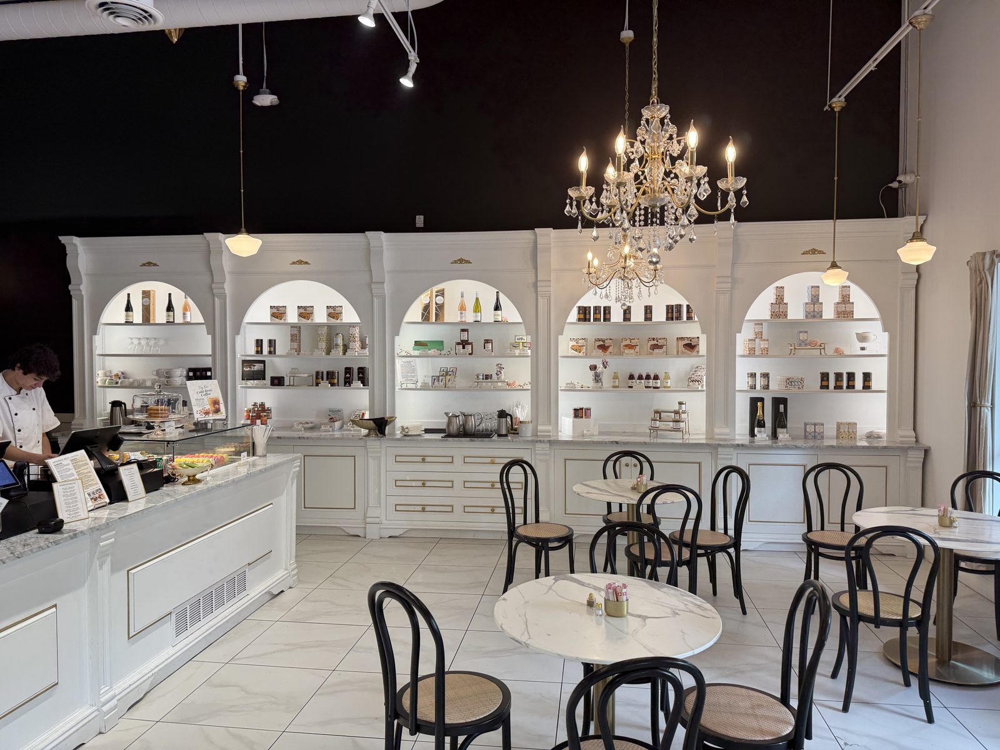
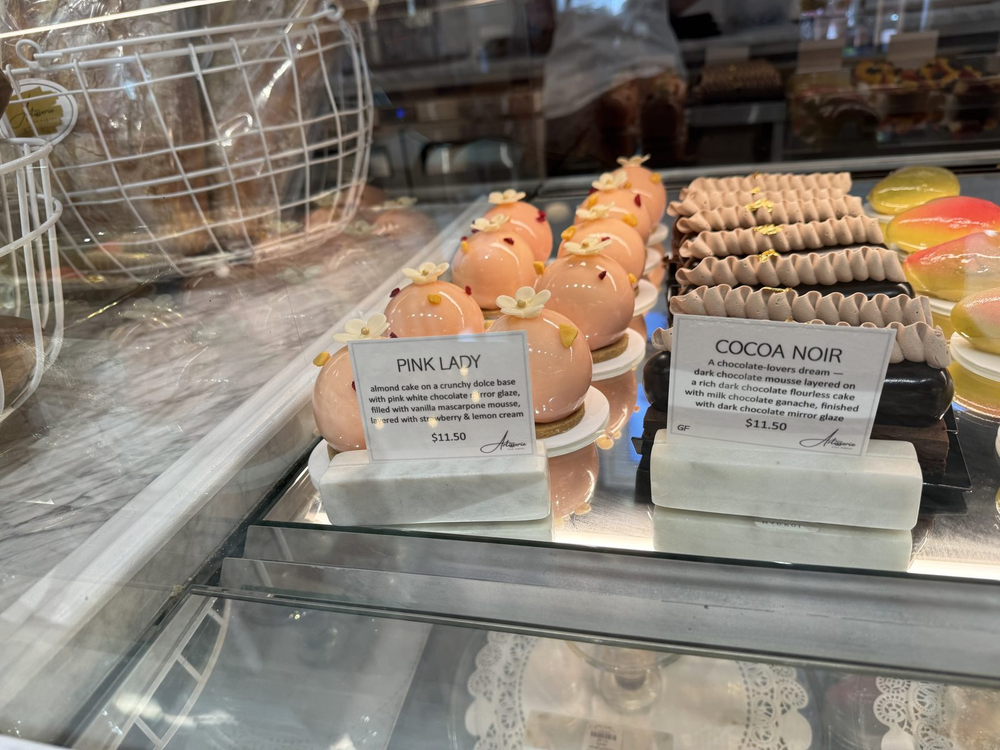

The Pink Lady at Artisserie Fine Bakery

A few doors down from St Honoré on First Street, here in Lake Oswego, sits a second bakery entirely — smaller, newer, and doing something different enough that it's worth its own stop rather than folding it into the same visit. Artisserie Fine Bakery opened here in July 2025, in the space a Blue Star Donuts had just vacated, and it does not read like a doughnut shop anymore. Inside is white marble, gold trim, a crystal chandelier over a handful of bistro tables — closer to a jewelry counter than a bakery case, which turns out to be exactly the point.

The Pink Lady
The Pink Lady, $11.50 — and five stars, no hesitation. The case card describes it plainly: almond cake on a crunchy dulce base, finished with a pink-and-white chocolate mirror glaze, filled with vanilla mascarpone mousse, layered with strawberry and lemon cream. What that doesn't quite capture is how it actually eats. The glaze cracks like a proper mirror finish should, the almond cake underneath is dense enough to hold its shape but still tender, and the mascarpone mousse is where the whole thing turns from "very pretty" into "worth the drive" — rich without being heavy, cut just enough by the strawberry-lemon layer underneath that it never turns cloying. Amazing, honestly, and I don't say that about dessert very often.

Is the Pink Lady worth $11.50?
Yes — without hesitation, and I don't say that about a dessert very often. It's the one thing in this notebook I would tell you to drive across town for on its own.
Entremets, which is the word for what these actually are
What sits in that case isn't quite "cake" in the American sense — the French term is entremet, a small, individually-portioned dessert built in distinct layers (a base, a mousse, a filling, a glaze) and finished to a mirror shine rather than frosted. It's a more architectural approach than a slice off a sheet cake: each one is assembled in a mold, glazed once set, and meant to be eaten whole rather than cut and served. The style is associated with modern French pastry technique, and Artisserie's case is full of them — the Cocoa Noir sitting beside the Pink Lady is the same construction in a dark-chocolate register, mousse over a flourless chocolate cake, finished in a dark mirror glaze instead of pink.
The kitchen here is led by Vitaliya Popovych, a classically trained pastry chef whose work leans hard into that entremet style — and it shows in how the case is lit and arranged, more like a small gallery than a counter. Artisserie runs a second location in Portland's Pearl District; this Lake Oswego shop, a short walk from St Honoré and the ice cream stop that follows it, is the newer of the two.
The practical bit
Artisserie Fine Bakery — 350 First St, Lake Oswego, Oregon 97034. 📍 Get directions
Hours: 8:00 AM – 7:00 PM Monday–Thursday and Sunday; 8:00 AM – 9:00 PM Friday and Saturday.
Worth knowing: the entremets are priced per piece ($11.50 for the Pink Lady) and clearly made to be photographed before they're eaten — but don't let that stop you from cutting in.